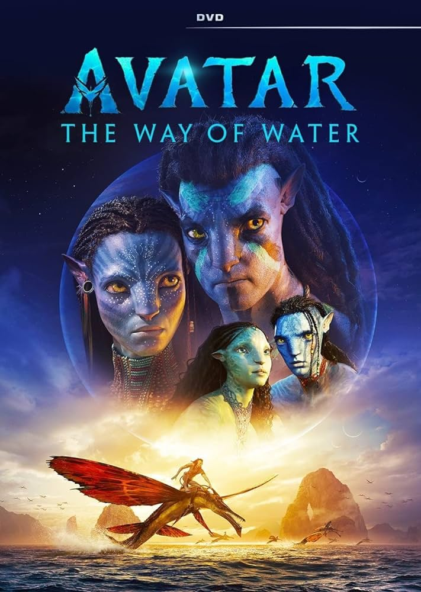
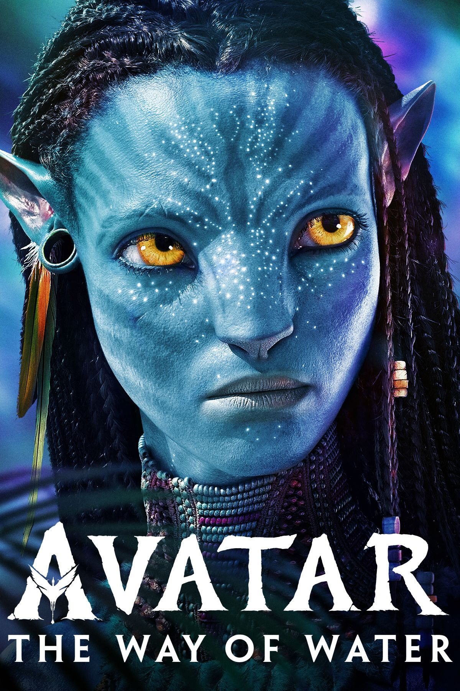
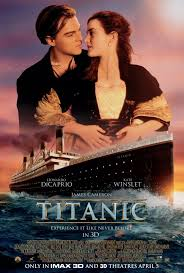
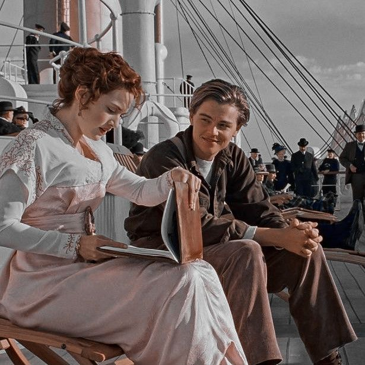

TOP 10 M0VIES
TOP 2
AVENGERS END GAME

"Avengers: Endgame" is the fourth Avengers film and the conclusion of the Infinity Saga in the Marvel Cinematic Universe (MCU).
Release Date: April 26, 2019
Directed by: Anthony and Joe Russo
Screenplay by: Christopher Markus and Stephen McFeely
Box Office: The film became a massive box office success, grossing over $2.798 billion worldwide, making it one of the highest-grossing films of all time.
Awards: The film received several nominations and awards, including Academy Award nominations for Best Visual Effects and Best Original Score
Key Characters:
-
Tony Stark / Iron Man (Robert Downey Jr.)
- Steve Rogers / Captain America (Chris Evans)
- Thor (Chris Hemsworth)
- Natasha Romanoff / Black Widow (Scarlett Johansson)
- Bruce Banner / Hulk (Mark Ruffalo)
- Clint Barton / Hawkeye (Jeremy Renner)
- Scott Lang / Ant-Man (Paul Rudd)
- Nebula (Karen Gillan)
- Rocket (Bradley Cooper)
- Thanos (Josh Brolin)
TOP 3
AVATAR THE WAY OF WATER

"Avatar: The Way of Water" is the sequel to James Cameron's 2009 film "Avatar.", it continues the story of Jake Sully and Neytiri on the planet Pandora.

- Released in December 2022
- Box Office and Reception : "Avatar: The Way of Water" received positive reviews for its visuals, emotional depth, and storytelling.
It grossed over $2 billion worldwide, becoming one of the highest-grossing films of all time.
- Visuals and Technology : The film utilizes groundbreaking technology, especially in underwater motion capture,
to create stunning visuals of Pandora's oceans and marine life.
- Plot Summary :Set over a decade after the first film, "The Way of Water" follows Jake Sully (Sam Worthington) and Neytiri (Zoe Saldana)
as they navigate the challenges of family life while facing new threats to Pandora. The couple has children,
including Kiri (Sigourney Weaver), Lo'ak (Britain Dalton), and Tuk (Trinity Jo-Li Bliss).
- Key Characters:
- Jake Sully (Sam Worthington): Now a leader and father, he struggles to protect his family.
- Neytiri (Zoe Saldana): A warrior and mother, fiercely protective of her family.
- Kiri (Sigourney Weaver): Jake and Neytiri's adoptive daughter with a deep connection to Pandora.
- Lo'ak (Britain Dalton): Their adventurous middle child.
- Tuk (Trinity Jo-Li Bliss): Their youngest daughter.
- Tonowari (Cliff Curtis): The leader of the Metkayina clan.
- Ronal (Kate Winslet): A member of the Metkayina clan and Tonowari's partner.
TOP 4
TITANIC

"Titanic" is a 1997 epic romance and disaster film directed by James Cameron. It is one of the most successful and iconic films of all time, both critically and commercially.
- Box Office and Reception: "Titanic" became the first film to gross over $1 billion at the worldwide box office. It won 11 Academy Awards, including Best Picture and Best Director for James Cameron. It held the record for the highest-grossing film of all time until Cameron's Avatar surpassed it in 2009
- Legacy:"Titanic" remains a cultural touchstone, praised for its mix of romance, historical drama, and visual spectacle. It continues to be regarded as one of the greatest films of all time
- Historical Context : While the main characters are fictional, the Titanic disaster was real, with over 1,500 passengers and crew losing their lives when the ship sank on April 15, 1912. The film meticulously recreates the opulence of the Titanic, its passengers, and the tragedy that befell them
- Music : The film's soundtrack, composed by James Horner, became iconic, especially the song "My Heart Will Go On" performed by Celine Dion, which became one of the best-selling singles of all time.
- Key Characters :
- Jack Dawson (Leonardo DiCaprio )
- Rose DeWitt Bukater (Kate Winslet)
- Cal Hockley (Billy Zane)
- Molly Brown (Kathy Bates)
- Captain Edward Smith (Bernard Hill)
LISTEN IN SPOTIFY - MY HEART WILL GO ON

TOP 5
Star Wars Ep. VII: The Force Awakens

Star Wars: Episode VII - The Force Awakens was released in 2015 and directed by J.J. Abrams. Here are some key details:
- Cast:
- Daisy Ridley as Rey
- John Boyega as Finn
- Oscar Isaac as Poe Dameron
- Adam Driver as Kylo Ren
- Harrison Ford as Han Solo
- Harrison Ford as Han Solo
- Mark Hamill as Luke Skywalker (briefly)
- Box Office Success: The film grossed over $2 billion worldwide, making it one of the highest-grossing films of all time.
- Critical Reception: It received positive reviews for its nostalgic elements, engaging characters, and visual effects. However, some criticized it for closely resembling the plot structure of A New Hope.
- Impact: The Force Awakens revitalized the Star Wars franchise, introducing new fans to the universe and setting up the sequel trilogy.
This movie reintroduced Star Wars to a new generation, combining practical effects with CGI and was praised for bridging the old and new trilogy characters
NEXT PAGE
PREVIOUS PAGE